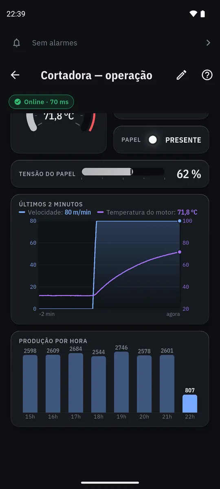

Opere a máquina pelo celular
Botões, ajustes, lâmpadas e mostradores com o valor de agora.
- O botão acende quando a máquina confirma, não quando você toca.
- Sem comunicação, a tela mostra o último valor esmaecido. Nunca um zero falso.
- Gráfico dos últimos minutos e produção por hora.
- Ajuste com limites e confirmação antes de gravar.

